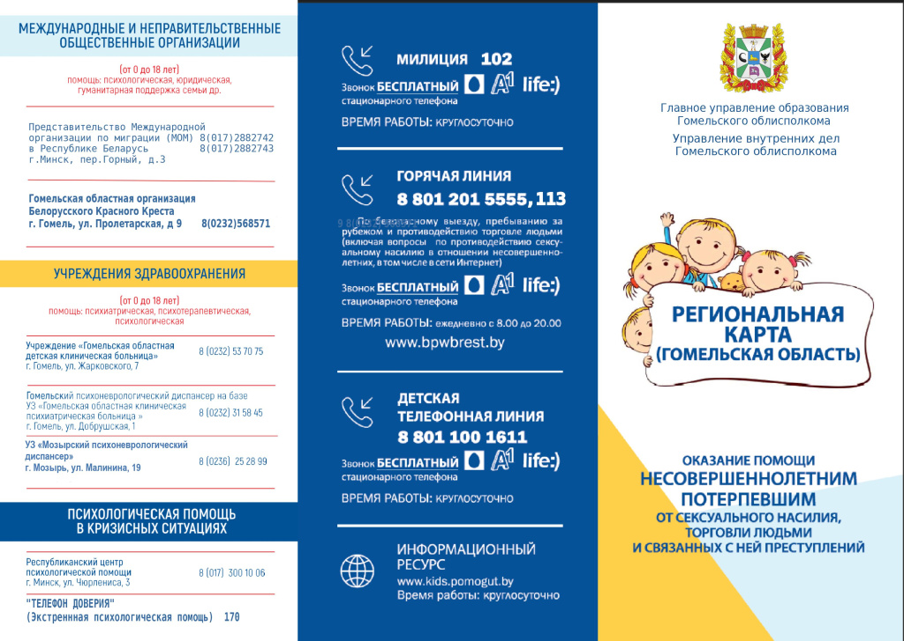
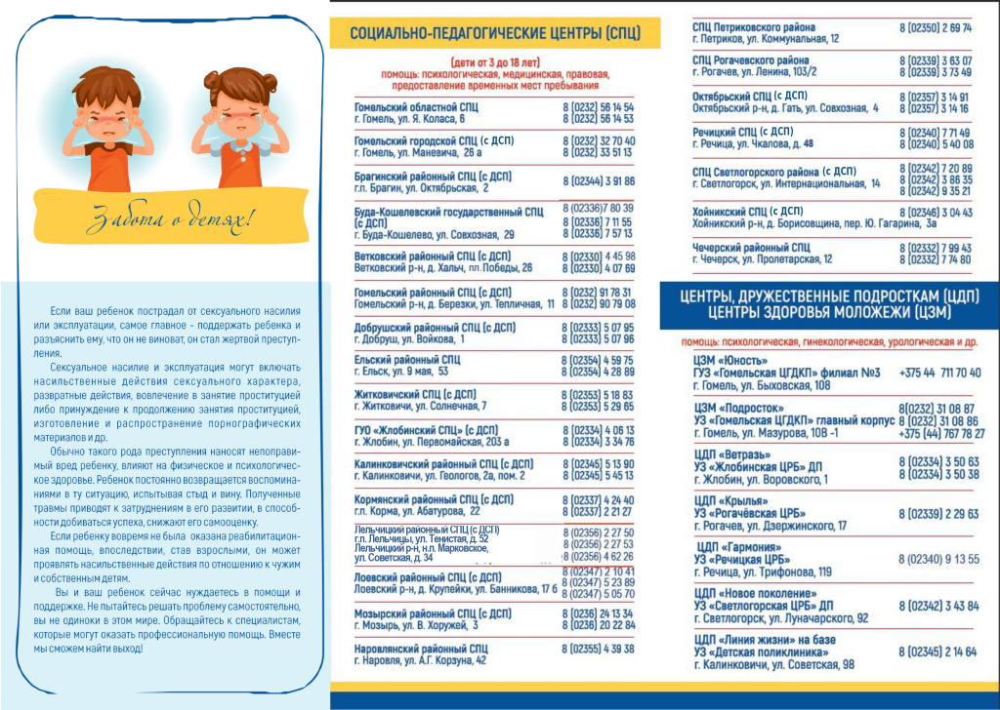
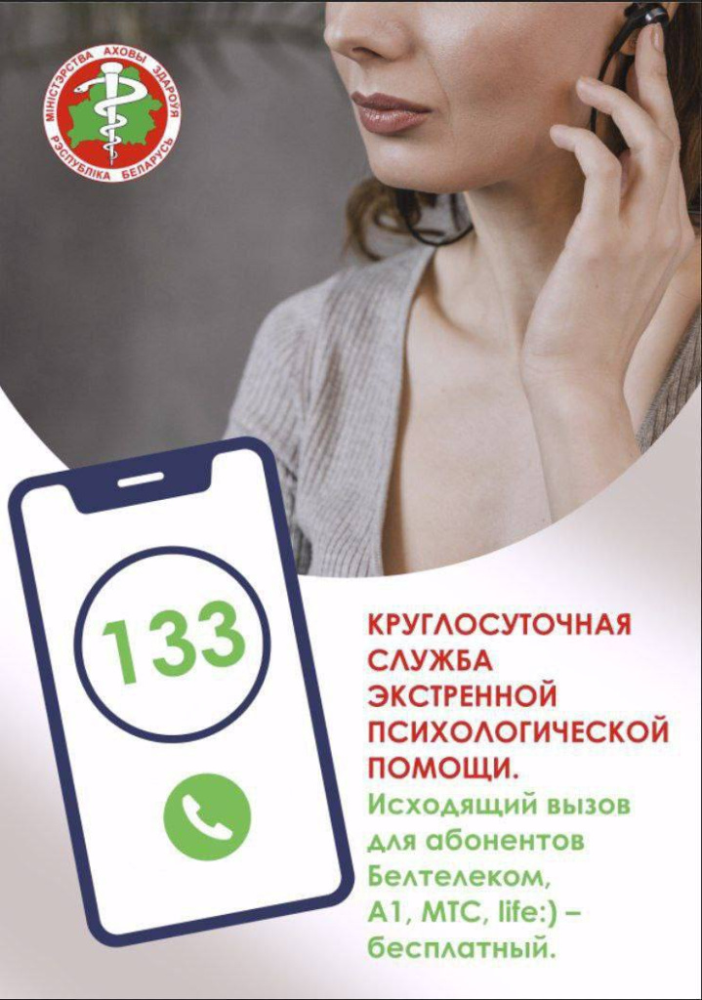

Профилактика домашнего насилия
ПЛАН ОБЕСПЕЧЕНИЯ БЕЗОПАСНОСТИ 1
Если Вы живете вместе с человеком, который применяет насилие по отношению к Вам:
- Постарайтесь не изолировать себя от своего социального окружения, поддерживайте тесные отношения со своими друзьями (подругами), родственниками, соседями и т.п.;
- Определите для себя такое место в доме, которое будет далеко от мест, где есть предметы, которые можно использовать в качестве оружия (например, кухня), и одновременно будет близким к выходу из квартиры (дома); в ситуации, если к вам применят насилие, либо прячьтесь в таком месте, либо покиньте квартиру;
- Выучите наизусть телефоны милиции, кризисных комнат для женщин, соседей, друзей, к которым можете обратиться, находясь в опасности;
- Подумайте, каким образом вы можете связаться с милицией; не забывайте, что в милицию вы сможете позвонить в любое время бесплатно;
- Расскажите друзьям и соседям, которым вы доверяете, о вашей ситуации; договоритесь о знаках, по которым они смогут понять, что вы в опасности; договоритесь с ними, что надо будет сделать, если вы подадите такой знак;
- Отрепетируйте поведение в момент опасности со своими детьми; уговорите их, что в ситуациях применения насилия они не должны вмешиваться; отработайте специальные слова, которые в момент опасности будут означать, что дети должны позвать кого-то на помощь либо покинуть квартиру (дом);
- Убедите своих детей, что насилие ни в каком случае не может быть оправданным, никогда не думайте, что вы либо ваши дети являются причиной насилия;
- Потренируйтесь с детьми, как быстро покинуть квартиру (дом);
- Старайтесь хранить предметы, которые могут быть использованы в качестве оружия (нож и т.п.) в закрытых либо трудно доступных местах;
- Старайтесь не пользоваться вещами, которые можно использовать для удушения, т.е. шаль, шарф, толстые цепочки;
- Под любым предлогом, который не вызовет подозрение, выходите из квартиры (дома), таким образом вы приучите супруга к тому, что вы не постоянно находитесь в квартире (доме);
- Всегда носите с собой мобильный телефон.
ПЛАН ОБЕСПЕЧЕНИЯ БЕЗОПАСНОСТИ 2
Если Вы готовитесь оставить человека, который применяет к Вам насилие:
- Отдайте на хранение все документы, которые доказывают, что к вам применялось физическое насилие (фотографии, справки и т.д.), человеку, которому доверяете (друзья, соседи, адвокат и т.п.);
- Определитесь, где вы можете получить помощь, расскажите там о том, что делает ваш супруг и не забывайте, что вы не должны стыдиться ситуации, в которую вы попали;
- Если вы ранены, немедленно обратитесь к врачу, попросите врача оформить соответствующую справку;
- Определитесь с местом, где может быть оказана помощь вашим детям. Это может быть кризисная комната, ваши друзья либо соседи; научите детей тому, что в первую очередь они должны думать о своей безопасности;
- Записывайте все случаи насилия по отношению к вам в дневник, который будет находиться в надежном месте, недоступном вашему супругу;
- Не ждите кризисной ситуации, заблаговременно проконсультируйтесь о своих правах;
- Спланируйте, как и на каком общественном транспорте вы доберетесь до места, где будете чувствовать себя в безопасности, либо всегда имейте при себе деньги на такси;
- Храните необходимые номера телефонов и документов в легкодоступном для вас месте на случай, если придется срочно покинуть дом;
- Обязательно храните в безопасном месте сумку с одеждой, лекарствами, несколькими любимыми игрушками детей и другими вещами, которые вам обязательно понадобятся в случае кризиса;
- Старайтесь всегда иметь при себе некую сумму денег на непредвиденный случай либо надежных людей (друзей, родственников), которые будут хранить отложенные вами деньги у себя;
- Спланируйте свои действия на тот случай, если дети либо кто-то другой расскажет супругу, что вы собираетесь от него уйти.
ПЛАН ОБЕСПЕЧЕНИЯ БЕЗОПАСНОСТИ 3
После того, как связь с человеком, применившим насилие, прервана:
- Ни в коем случае не оставайтесь с этим человеком наедине, например, просите водителя такси подождать до тех пор, пока вы войдете в свой дом;
- Если этот человек встречает вас на улице и угрожает, не стесняйтесь просить помощи у прохожих на улице. Например: “этот человек мне угрожает, позвоните, пожалуйста, в милицию” либо “этот человек пристает ко мне, у кого-нибудь из вас есть телефон?”;
- Убедитесь, что в вашем доме надежная дверь.
ПЛАН ОБЕСПЕЧЕНИЯ БЕЗОПАСНОСТИ 4
Если Вы находитесь под защитой закона и живете в прежнем доме (квартире):
- Сообщите в ближайшее отделение милиции о своей ситуации, прислушайтесь к их советам;
- Руководствуясь советами милиции, усильте безопасность вашего дома; по этому вопросу вы можете получить консультацию в милиции;
- Договоритесь с другими жителями дома и поменяйте замок в доме (своей квартире);
- Не бойтесь сообщить о своей ситуации своим друзьям, соседям, работодателю, учреждению, где учатся дети (эта информация останется конфиденциальной, поскольку в ситуации насилия все ведомства заинтересованы помочь вам и вашим детям);
- Если человек, применявший ранее насилие, не соблюдает правила, немедленно сообщайте в милицию;
- Попросите соседей звонить в милицию в случаях опасности;
- Если есть такая возможность, старайтесь ходить на работу, сопровождать детей в детский сад, в школу не в одно и тоже время. Тоже правило постарайтесь применять ко времени своего возвращения домой; лучше ходить на работу и возвращаться домой в часы “пик”.
Пострадавшие от домашнего насилия могут обращаться за помощью в государственные организации.
ТЕРРИТОРИАЛЬНЫЙ ЦЕНТР СОЦИАЛЬНОГО ОБСЛУЖИВАНИЯ НАСЕЛЕНИЯ МОЗЫРСКОГО РАЙОНА:
г. Мозырь, пл. Горького, 7
тел. 22 52 38, 22 52 04, 22 35 00
(понедельник-пятница с 8.30 до 17.30, перерыв на обед с 13.00 до 14.00, кроме праздничных дней, объявленных Президентом Республики Беларусь нерабочими)
8 029 853 76 00 (круглосуточно).
ТЦСОН может предложить следующие виды помощи:
- социальная услуга - действия по оказанию гражданину помощи в целях содействия в предупреждении, преодолении трудной жизненной ситуации и (или) адаптации к ней (ст.1 Закона Республики Беларусь «О социальном обслуживании»);
- социально-педагогические услуги - действия, направленные на социализацию граждан различных возрастных и социальных групп, организацию их досуга в целях приобретения ими социальной ориентации и общепринятых норм поведения (ст.30 Закона Республики Беларусь «О социальном обслуживании»);
- социально-посреднические услуги - содействие установлению и расширению связей между гражданами, получающими социальные услуги, и государственными органами (организациями), а также оказание в установленном порядке услуг по представлению интересов граждан, получающих социальные услуги (ст.30 Закона Республики Беларусь «О социальном обслуживании»);
- социально-психологические услуги - содействие гражданам в предупреждении, разрешении психологических проблем, преодолении их последствий, в том числе путем активизации собственных возможностей граждан, и создание необходимых для этого условий (ст.30 Закона Республики Беларусь «О социальном обслуживании»);
- социальный патронат - деятельность по сопровождению граждан, находящихся в трудной жизненной ситуации, направленная на ее преодоление, восстановление нормальной жизнедеятельности, мобилизацию и реализацию собственного потенциала граждан для личного и социального роста (ст.30 Закона Республики Беларусь «О социальном обслуживании»);
- временный приют - предоставление временного места пребывания гражданам, не имеющим определенного места жительства либо по объективным причинам, утратившим возможность нахождения по месту жительства и месту пребывания (ст.30 Закона Республики Беларусь «О социальном обслуживании»).
С целью оказания услуги временного приюта в Мозырском районе функционирует «кризисная» комната. Гражданам старше 18 лет и семьям с детьми услуга временного приюта оказывается независимо от места регистрации (места жительства).
«Кризисная» комната – специально оборудованное отдельное помещение, в котором созданы необходимые условия для безопасного проживания.
Режим работы «кризисной» комнаты – круглосуточный.
Информация о клиенте и его семье, полученная сотрудником Центра, является конфиденциальной, т.е. не подлежит разглашению третьим лицам.
При экстренном заселении в «кризисную» комнату необходимо обратиться в дежурную часть отдела внутренних дел Мозырского райисполкома по телефону 102.
В «кризисную» комнату помещаются граждане по направлению управления по труду, занятости и социальной защите Мозырского районного исполнительного комитета, отдела образования, спорта и туризма Мозырского районного исполнительного комитета, учреждения здравоохранения «Мозырская центральная городская поликлиника», отдела внутренних дел Мозырского районного исполнительного комитета, других государственных органов и организаций, а также обратившиеся самостоятельно.
С гражданином, помещенным в «кризисную» комнату, заключается договор на оказание услуги временного приюта (форма утверждена постановлением Министерства труда и социальной защиты РБ 26.01.2013г. №11), который определяет условия и период нахождения в «Кризисной комнате». Срок пребывания граждан в «кризисной» комнате определяется в договоре и может быть продлен с учетом обстоятельств конкретной жизненной ситуации.
Для заключения договора гражданин предоставляет следующие документы:
- письменное заявление;
- документ, удостоверяющий личность.
При заселении гражданин подписывает заявление о неразглашении места нахождения «кризисной» комнаты и согласие с правилами внутреннего распорядка «кризисной» комнаты.
Во время пребывания граждан в «кризисной» комнате бытовые и прочие условия жизнедеятельности определяются по принципу самообслуживания. При заселении семьи с детьми уход за детьми осуществляется родителем. В период пребывания в «кризисной» комнате питание граждан осуществляется из собственных средств, при возможности, средств, полученных от приносящей доходы деятельности, безвозмездной (спонсорской) помощи, других источников, не запрещенных законодательством Республики Беларусь.
Все услуги ТЦСОН предоставляются БЕСПЛАТНО.


Домашнее насилие происходит за закрытыми дверями, но оно, несомненно, является проблемой всего общества. Наиболее распространенная форма насилия в семье – насилие в отношении женщин. Согласно исследованиям, проведенным в ряде стран Всемирной организацией здравоохранения, до 70% женщин хотя бы раз в жизни подвергались физическому насилию со стороны своего партнера или мужа. Многие женщины совершают грубую ошибку, когда после первого или второго семейного скандала, завершившегося рукоприкладством со стороны мужа-агрессора, не придают этому особого значения и не обращаются за помощью к специалистам. Следует помнить: в 95% случаев, если насилие уже имело место, оно повторится.
Насилие в семье - умышленные действия физического, психологического, сексуального характера члена семьи по отношению к другому члену семьи, нарушающие его права, свободы, законные интересы и причиняющие ему физические и (или) психические страдания (ст.1 Закона Республики Беларусь «Об основах деятельности по профилактике правонарушений»).
Члены семьи - близкие родственники, другие родственники, нетрудоспособные иждивенцы и иные граждане, проживающие совместно с гражданином и ведущие с ним общее хозяйство (ст.1 Закона Республики Беларусь «Об основах деятельности по профилактике правонарушений»).
В домашнем насилии выделяют 4 основных вида:
Физическое насилие.
Все агрессивные формы поведения, представляющие собой физическое воздействие на человека, включающее ограничение свободы передвижения. Это избиение, толчки, царапины, плевки, шлепки, пощечины, хватание, бросание предметами, нанесение ударов руками и ногами, удушение, использование оружия, нанесение ожогов и др.
Эмоционально-психологическое насилие.
Выражается в унижении, запугивании, принуждении и изолировании. Это словесные оскорбления, постоянная критика мыслей, чувств, мнений, убеждений, действий; постоянные допросы, шантаж, угрозы уйти и забрать с собой детей, угрозы насилия по отношению к себе, жертве или детям, совершение насилия в отношении детей, родителей, домашних животных или разрушение предметов собственности, контроль или ограничение круга общения жертвы, телефонных разговоров, проявление ревности в крайней степени, преследование, обвинение партнера во всех проблемах, прерывание сна, процесса еды, и т.д. Сюда же относится принуждение сменить вероисповедание, мировоззрение, отступить от жизненных принципов и ценностей.
Сексуальное насилие.
Любой сексуальный акт или сексуальное поведение, навязываемое партнерше(-у) без ее(его) согласия. Это принуждение к сексуальному акту с использованием силы, угроз или шантажа (изнасилование), причинение боли или вреда здоровью посредством сексуальных действий, жесткий отказ в сексуальных потребностях жертве, принуждение к сексуальному акту в неприемлемой для жертвы форме, и др. Отдельно выделяются насильственные сексуальные действия в отношении детей – инцест.
Экономическое насилие.
Использование денег для контролирования партнера. Это отказ в содержании детей, единоличное принятие финансовых решений, создание ситуации, при которой партнер вынужден выпрашивать деньги и отчитываться в любых тратах, утаивание доходов, растрачивание семейных денег, запрет работать, принуждение работать, изъятие заработанных денег и т.д.
Что необходимо знать о жестоком обращении с пожилыми людьми
«Домашнее насилие причиняет боль, которая гораздо сильнее, чем видимые отметины синяков и шрамов. Это опустошающее чувство — быть оскорбленной тем, кого ты любишь»
Что такое жестокое обращение с пожилыми людьми?
ЖЕСТОКОЕ ОБРАЩЕНИЕ С ПОЖИЛЫМИ ЛЮДЬМИ ИЛИ НАСИЛИЕ НАД НИМИ часто определяется, как любое действие или бездействие, которое причиняет вред пожилому человеку или подвергает риску его здоровье или благосостояние.
Всемирная организация Здравоохранения определяет ЖЕСТОКОЕ ОБРАЩЕНИЕ С ПОЖИЛЫМИ ЛЮДЬМИ как, «СОВЕРШЕНИЕ КАКИХ-ЛИБО ЕДИНИЧНЫХ ИЛИ ПОВТОРЯЮЩИХСЯ АКТОВ, А ТАКЖЕ БЕЗДЕЙСТВИЕ В РАМКАХ КАКИХ-ЛИБО ОТНОШЕНИЙ, ПРЕДПОЛАГАЮЩИХ ДОВЕРИЕ, ЧТО ПРИЧИНЯЕТ ВРЕД ПОЖИЛОМУ ЧЕЛОВЕКУ ИЛИ ВЫЗЫВАЕТ У НЕГО СТРЕСС».
Жестокое обращение с пожилыми людьми может происходить, как у них дома, так и в домах престарелых или других организациях, для лиц данной категории.
Как проявляется насилие по отношению к пожилому человеку?
Существует множество категорий жестокого обращения с пожилыми людьми. Они могут подвергаться нескольким видам жестокого обращения одновременно.
Физическое насилие
Любой акт насилия или грубого обращения, причиняющий вред или физический дискомфорт, в том числе неуместное и/или незаконное использование физической силы или использование медикаментов для ограничения передвижения.
Примеры физического насилия: толкание, рукоприкладство, пинки, пощёчины, грубое обращение, таскание за волосы, причинение ожогов….
Жестокое обращение с пожилыми людьми недопустимо, и зачастую оно является преступлением
Психологическое насилие
Этот вид жестокого обращения также называют эмоциональным оскорблением. Психологическое оскорбление подразумевает под собой любое действие, в том числе ограничение свободы, изоляцию, словесное оскорбление, унижение, запугивание, инфантилизацию (обращение как с ребёнком) или любое другое действие, которое может унизить пожилого человека как личность, нанести удар по чувству собственного достоинства и самооценке.
Примеры психологического оскорбления: угрозы, запугивания, брань, оскорбления, унижение, отстранение пожилого человека от принятия решений, когда тот в состоянии сделать это сам, изоляция пожилого человека от его семьи, друзей, досуговой деятельности, доведение до самоубийства….
САМЫМИ РАСПРОСТРАНЁННЫМИ ФОРМАМИ НАСИЛИЯ В ОТНОШЕНИИ ПОЖИЛЫХ ЛЮДЕЙ ЯВЛЯЮТСЯ ПРЕНЕБРЕЖЕНИЕ, ПСИХОЛОГИЧЕСКОЕ И ЭКОНОМИЧЕСКОЕ НАСИЛИЕ
ФИНАНСОВАЯ ЭКСПЛУАТАЦИЯ
Этот вид также называют материальной эксплуатацией, экономическим насилием.
Финансовая эксплуатация – это незаконное использование финансов и имущества пожилого человека без его ведома и полного на то согласия. Или, в случае недееспособности пожилого человека, использование денежных средств не в его интересах; злоупотребление доверенностью на имущество на случай потери дееспособности.
Примеры финансовой эксплуатации: использование средств пожилого человека иначе, чем было им запланировано, получение пенсии или обналичивание чеков без разрешения, лишение средств (пенсии, сбережений), введение в заблуждение при подписывании любого документа (договора или завещания), порча вещей, мебели….
Все виды жестокого обращения или халатность по отношению к пожилым людям наносят им вред
СЕКСУАЛЬНОЕ НАДРУГАТЕЛЬСТВО
Любые действия сексуального характера, направленные на пожилого человека без его согласия и полного осознания происходящего.
Примеры сексуального надругательства: нежелательные прикосновения, инцест, изнасилование, домогательства.
ПРЕНЕБРЕЖЕНИЕ / ХАЛАТНОСТЬ
Намеренное непредоставление предметов первой необходимости или ухода (активное пренебрежение) или непредоставление вещей или ухода пожилому человеку в связи с отсутствием опыта, знаний или возможности (пассивное пренебрежение).
Примеры пренебрежения: отказ в предоставлении еды, питья, медикаментов, чистой одежды, средств личной гигиены, отказ в возможности поддерживать контакты, изоляция пожилого человека, оставление его в одиночестве или забывание о его существовании, отказ в приёме гостей (членов семьи или друзей).
ЗЛОУПОТРЕБЛЕНИЕ МЕДИКАМЕНТОЗНЫМИ СРЕДСТВАМИ
Халатность и несвоевременность, проявленные при выдаче лекарств, намеренная передозировка лекарственного препарата либо, наоборот, умышленный отказ больному в получении необходимого лекарства.
КТО ЯВЛЯЕТСЯ ОБИДЧИКОМ?
Жестокое обращение по отношению к пожилым может исходить от членов их семей, друзей, обслуживающего персонала или любого другого лица, наделённого определенными полномочиями (опекуна). Чаще всего обидчиками пожилых являются члены их семьи.
КАКОВЫ ПРИЗНАКИ И СИМПТОМЫ ЖЕСТОКОГО ОБРАЩЕНИЯ С ПОЖИЛЫМИ ЛЮДЬМИ?
Жестокое обращение с пожилыми людьми обычно происходит в тех случаях, когда жертва, так или иначе, зависит от обидчика. У жертв жестокого обращения могут проявляться следующие симптомы:
- депрессия, страх, беспокойство, пассивность;
- социальное отчуждение;
- необъяснимые телесные повреждения;
- нехватка еды, одежды и других необходимых вещей;
- изменения в личной гигиене и питании (например, признаки истощения).
КТО ОТНОСИТСЯ К ГРУППЕ РИСКА?
Любой из пожилых людей может стать жертвой жестокого обращения. Вопреки распространенному мнению, большинство жертв являются полноценными людьми и не требуют постоянного ухода. Наиболее уязвимы в отношении насилия и чаще других подвергаются ему престарелые женщины.
ЕСЛИ ВЫ ИСПЫТЫВАЕТЕ ЖЕСТОКОЕ ОБРАЩЕНИЕ, ТО ВЫ ДОЛЖНЫ ЗНАТЬ:
- Жестокое обращение – не Ваша вина.
- Вы не заслужили такого обращения.
- Многие категории жестокого обращения противозаконны.
- Все виды подобного обращения НЕДОПУСТИМЫ.
- Жестокое обращение недопустимо ни в одной культуре и религии.
- Вы имеете право жить без страха.
- Вы имеете право жить так, как хотите.
- Вы не можете контролировать поведение Вашего обидчика.
- С течением времени жестокое обращение обычно становится все хуже и хуже.
- У Вас есть право чувствовать себя защищенным и быть в безопасности.
- Вы не одни – помощь есть.
ЕСЛИ ВАМ ИЛИ ВАШИМ БЛИЗКИМ, СОСЕДЯМ, ЗНАКОМЫМ ПРИЧИНЯЮТ ВРЕД ИЛИ ВЫ ЧУВСТВУЕТЕ СЕБЯ НЕБЕЗОПАСНО, ТО ВЫ ВСЕГДА МОЖЕТЕ ОБРАТИТЬСЯ ЗА ПОМОЩЬЮ В:
Учреждение "Территориальный центр социального обслуживания населения Калинковичского района" отделение комплексной поддержки в кризисной ситуации.
г. Калинковичи, ул. Куйбышева, 3
контактный телефон: 802345 5-22-32
ДОМАШНЕЕ НАСИЛИЕ это не то, что нужно скрывать, замалчивать, терпеть либо страдать от него.
Случай семейного насилия, если он произошёл, необходимо остановить, чтобы предотвратить его повторение в будущем.
НА ДАННЫЙ МОМЕНТ РЕШЕНИЕ ПРОБЛЕМЫ ДОМАШНЕГО НАСИЛИЯ В РЕСПУБЛИКЕ БЕЛАРУСЬ РЕГУЛИРУЕТСЯ СЛЕДУЮЩИМИ НОРМАТИВНО-ПРАВОВЫМИ ДОКУМЕНТАМИ:
1. Конституция Республики Беларусь;
2. Уголовный кодекс Республики Беларусь;
3. Кодекс Республики Беларусь об административных правонарушениях;
4. Кодекс Республики Беларусь о семье и браке;
5. Гражданский кодекс Республики Беларусь;
6. Закон Республики Беларусь «Об основах деятельности по профилактике правонарушений»;
7. Закон Республики Беларусь «О социальном обслуживании».
Меры профилактики насилия в семье
В настоящее время в Республике Беларусь сложилась проверенная практика применения правовых норм по фактам совершения правонарушений в сфере семейно-бытовых отношений. Однако самое главное – предупредить преступление, а не разбираться после его совершения в причинах произошедшего.
На государственном уровне принимаются необходимые меры по совершенствованию деятельности, направленной на предупреждение насилия, в том числе в отношении женщин и детей. Республика Беларусь является первой на постсоветском пространстве, где 10 ноября 2008 года принят Закон «Об основах деятельности по профилактике правонарушений». А 4 января 2014 года вышел новый Закон Республики Беларусь «Об основах деятельности по профилактике правонарушений», который вступил в силу 16 апреля 2014 года. Одним из направлений применения данного закона является реализация его положений в области предупреждения насилия в семье. Закон дает определение насилию в семье, а также определяет меры индивидуальной и общей профилактики данного вида правонарушений. Принципиально новым в данном законе является введение в практику обеспечения безопасности пострадавших от домашнего насилия защитных предписаний.
Защитное предписание
Защитное предписание – установление гражданину, совершившему насилие в семье, ограничений на совершение определенных действий.
Защитное предписание может запретить:
- Предпринимать попытки выяснять место пребывания жертвы насилия в семье;
- Посещать места нахождения жертвы насилия в семье, если жертва временно находится вне совместного места жительства;
- Общаться с жертвой насилия в семье, в том числе по телефону и через интернет;
- Распоряжаться общей с жертвой насилия в семье собственностью.
Защитное предписание может предписать:
- Временно покинуть общее с жертвой насилия в семье жилое помещение.
Защитное предписание с письменного согласия совершеннолетнего пострадавшего обязывает гражданина, совершившего насилие, временно покинуть жилое помещение и запрещает распоряжаться совместной собственностью.
Основные направления профилактики
Основным направлением профилактики насилия в семье является взаимодействие республиканских органов государственного управления, органов исполнительной и распорядительной власти, правоохранительных органов по формированию здорового образа жизни граждан, повышению моральных устоев семьи, возрождению исторических традиций, взаимоуважению и взаимопониманию между членами семьи, социальной поддержке малоимущих семей.
По инициативе Министерства внутренних дел с 15 января 2007 года каждый четверг проводится акция «Семья без насилия». В рамках акции сотрудники милиции, здравоохранения, образования, социальной защиты, культуры и СМИ посещают неблагополучные семьи, выезжают на сообщения о семейных скандалах и принимают меры по предупреждению насилия.
Многолетний опыт показывает, что пьянство является катализатором насилия. Основные усилия государства направлены на проведение воспитательно-профилактической работы с населением, формирование сознательного соблюдения норм морали и закона, пропаганду общечеловеческих ценностей и здорового образа жизни.
Изоляция хронических алкоголиков
В Беларуси действует институт изоляции хронических алкоголиков в лечебно-трудовые профилактории. Функционирование профилакториев позволяет членам семьи на определённый период спокойно жить, работать или учиться, а также снижает вероятность совершения правонарушений.
К родителям, злоупотребляющим алкоголем и пренебрегающим детьми, применяются строгие меры воздействия: отобрание детей и лишение родительских прав. Для стабилизации семейно-бытовой обстановки принят Декрет Президента Республики Беларусь от 24 ноября 2006 г. № 18 «О дополнительных мерах по государственной защите детей в неблагополучных семьях». Декрет вступил в силу 1 января 2007 года и обязывает родителей возмещать расходы государства на содержание детей.
Основная цель Декрета – защитить права и законные интересы детей, предотвратить насилие в семье и дать детям возможность полноценно развиваться.

